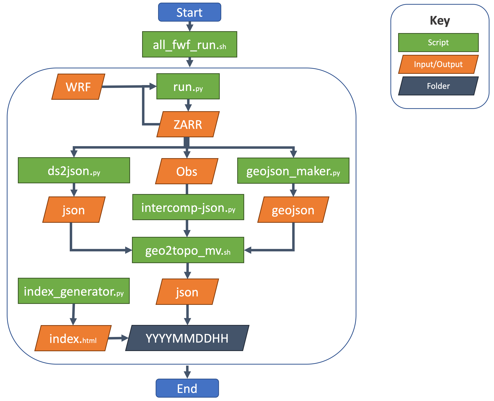

Structure¶
Flow Chart¶

File Directories¶
bin¶
/bluesky/fireweather/fwf/bin is the operational directory, its where the code to run the model resides.
all_fwf_run.sh
geo2topo_mv.sh
scripts¶
/bluesky/fireweather/fwf/scripts is the operational directory, its where the code to run the model resides.
run.py
geojson_maker.py
ds2json.py
index_generator.py
build_intercomp.py
wx_by_tzone.py
wx_json.py
wx_keys.py
utils¶
/bluesky/fireweather/fwf/utils is the model code directory, all the scripts in master call on class methods and other functions in this directory.
fwf.py
read_wrfout.py
geoutils.py
data¶
/bluesky/fireweather/fwf/data is the current forecast data directory, the directory has subfolders for each data type.
the key subfolder is
/FWF-WAN00CG-01the current fwf forecast zarr files live there.the current fwf zarr forecast data is broken up into two groups
hourlyanddailythe table below shows whats in each group.
archive¶
/bluesky/archive/fireweather/data/ is the archive directory, it where copies of completed forecasts are stored as .tgz
fwf-hourly-<domain>-YYYYMMDDHH.tgzfor the hourly forecastsfwf-daily-<domain>-YYYYMMDDHH.tgzfor the daily forecasts
wrf¶
the model currently uses the 12-km and 4-km WRF 00Z but is easily adaptable to other domains and initialization times.
/bluesky/working/wrf2arl/WAN00CG-01/YYMMDD00/is the WRF directory where the model pulls in.ncfilesIf you change to a new model domain you’ll first need to run
../utils/timezone.pyto generate a tzone_ds.zarr file
Required packages¶
Conda is used to manage python, its recommend to use conda to make the model work.
fwf-env.ymllives in the parent folder of the fwf repoto make a conda environment with all the required packages run the following code block
conda env create -f fwf-env.yml